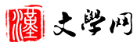
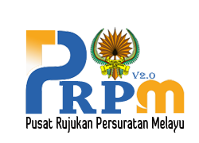
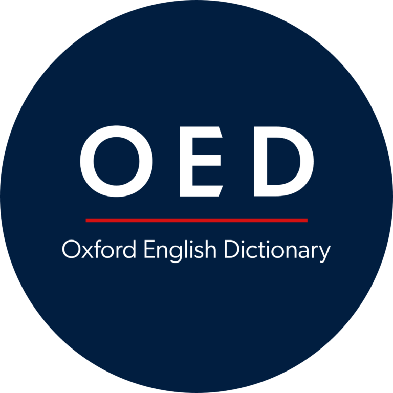

新华字典
在线新华字典共收录简体、繁体2万余字，为广大汉语学习者提供汉字的拼音、部首、笔画、字义解释、同义词、反义词、同音字、英文翻译、词义解释、词性变化、康熙字典解释、说文解字、字源演变、常用词组等查询，支持拼音查字、手写输入查字。

Pusat Rujukan Persuratan Melayu
Portal rujukan yang telah disediakan oleh Dewan Bahasa dan Pustaka, dalam usaha membantu pengguna bahasa membuat rujukan mengenai sesuatu kata dengan lebih pantas.

Oxford English Dictionary
OED is widely regarded as the accepted authority on the English language. It is an unsurpassed guide to the meaning, history, and usage of 500,000 words and phrases past and present.